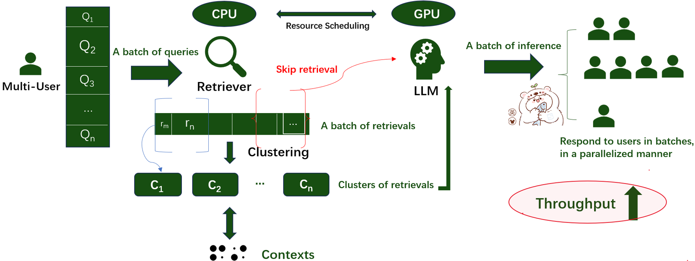

Bachelor in Computer Science, Wuhan University
2024–Now
Hi, this is Xingyu. I'm a second-year undergraduate in Hongyi Honor Class, Computer Science at Wuhan University. I joined the Luojia Totem Database Lab, Wuhan University in my freshman year, where I am fortunate to be advised by
Sheng Wang. I'm now focusing on systematical optimization of Retrieval-Augmented Generation (RAG)
in high-concurrency scenarios, in order to manage "intelligent" data.
Awards and Honors
Scholarship for Excellent Academic Performance, Shenzhen Tianyuan Dic Information Technology Co., Ltd
2025.11
Scholarship for Excellent Academic Performance, Wuhan University
2025.9
Outstanding Student, Wuhan University
2025.9
Tencent Open Source Contributor
2025.9
Tencent Open Source Award(total ￥6000)
2025.9
Outstanding Freshman Award, Wuhan University
2024.9
Research Interests
- Throughput Optimization of RAG System
- Vector Database
- Database System
- KV-cache in LLM
Projects
- 2025 MoRAG(Multi-Query Optimized RAG)(Ongoing) —I started research for RAG system optimization for Multi-queries scenarios.
- Batch Retrieval and Multi-Query Scheduling
- Same-Batch Joint Inference
- System-Level Optimization Design

Documents (Preparing)
- 2025 Migration Scripts for OpenTenBase —I was selected by 2025 Tencent Rhino Bird Open Source Talent Training Program.
Updating OpenTenBase from v2.6 to v5.0 without changing any data.
Repo
Compiling OpentenBase v5.0 successfully for the first time on Ubuntu.
Repo
I was conferred on "Tencent Open-source Core Contributor".
CV
RESUME
Contact
Email: whu-quxy[at]whu[dot]edu[dot]cn
Address: B701, School of Computer Science, Wuhan University